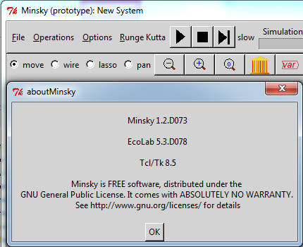
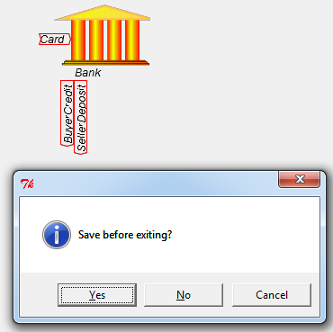

Tells you the version of Minsky that you are using--currently version 1.2.D073

Clear the Canvas.
Open an existing Minsky file (Minsky files have the suffix of "mky").
Save the current file.
Save the current file under a new name.
Produce the set of equations that define the current system for use in documenting the model, exporting to another computer mathematics program, etc.
Exit the program. Minsky will check to see whether you have saved your changes. If you have, you will exit the program; if not, you will get a reminder to save your changes:

Refresh the Canvas.
Show the nodes to which wires attach on the objects on the Design Canvas.
For developer use only
For developer use only